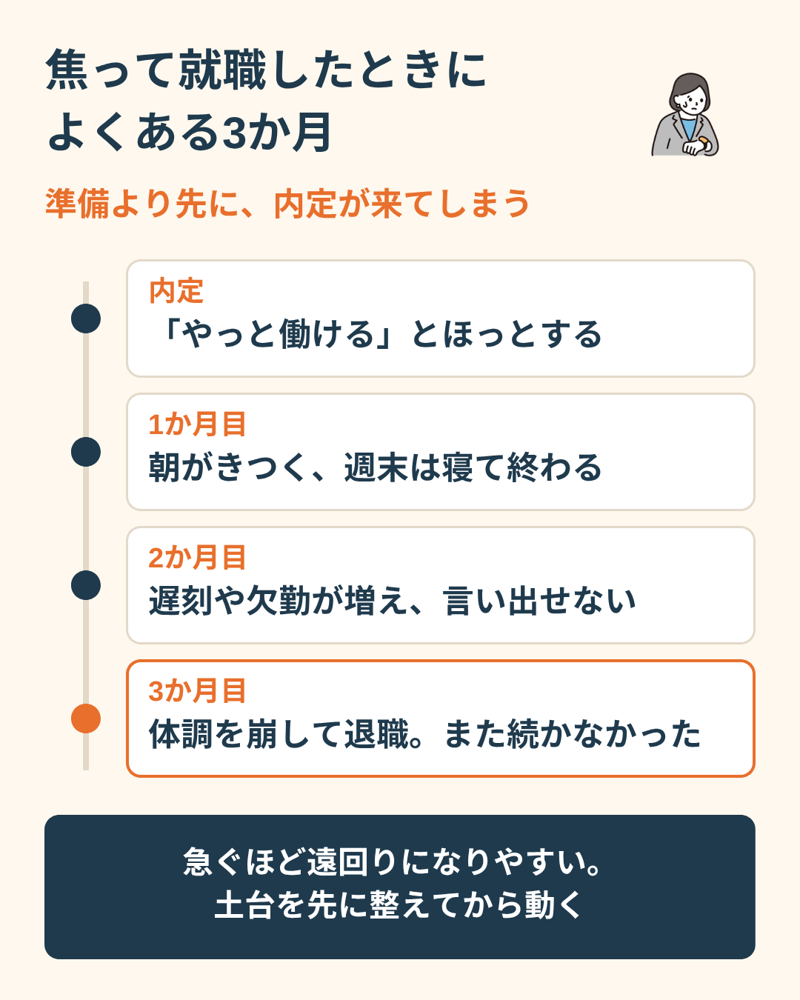
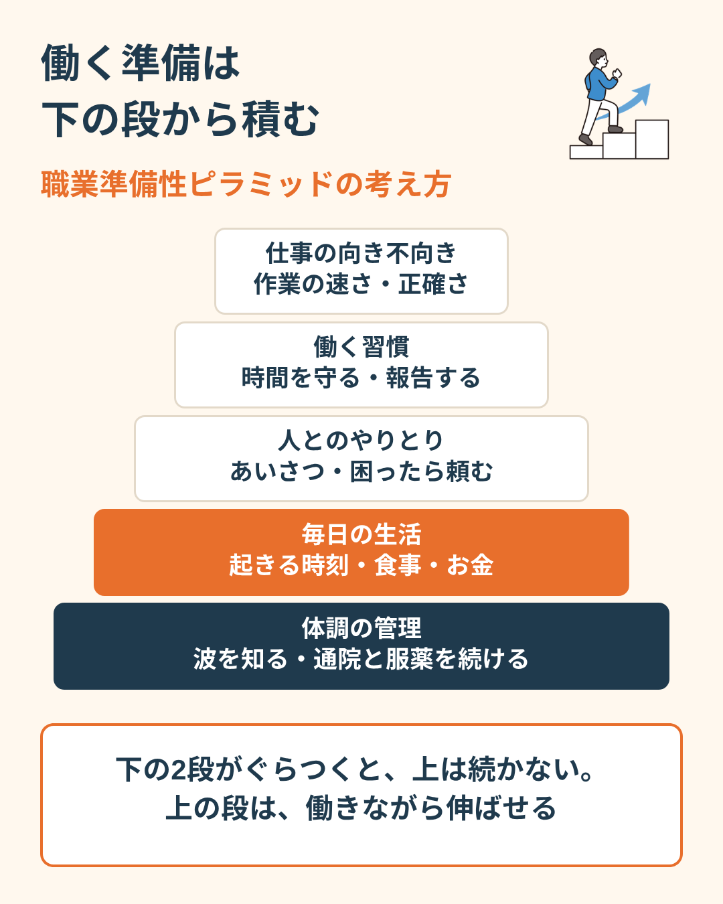
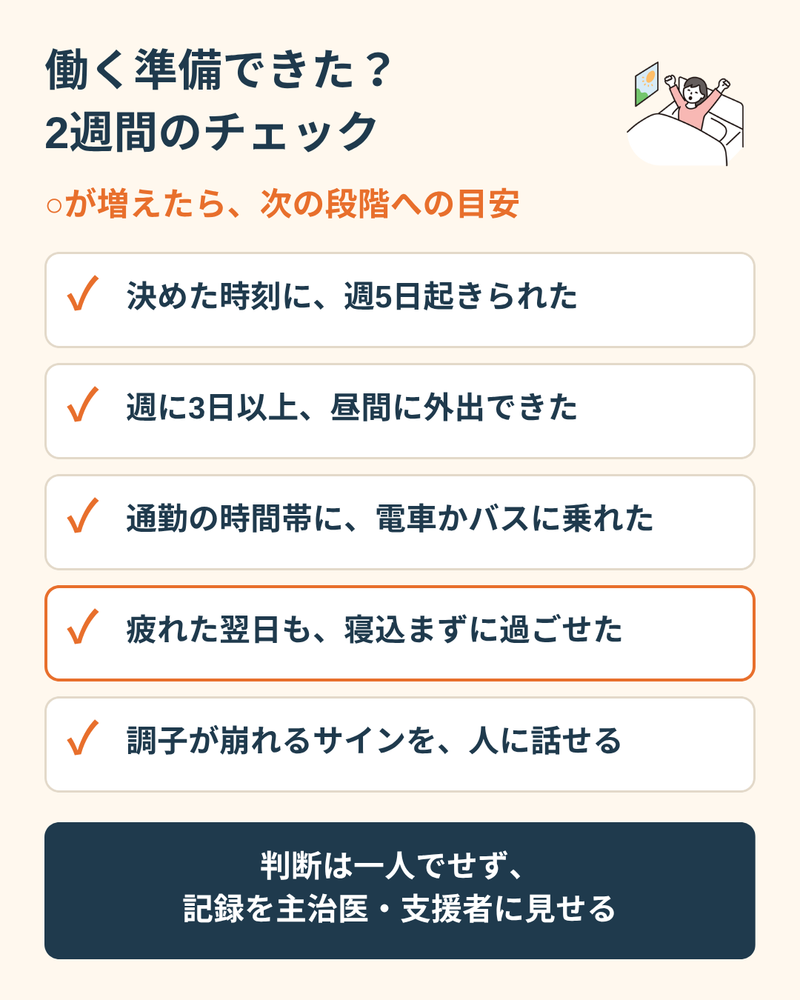
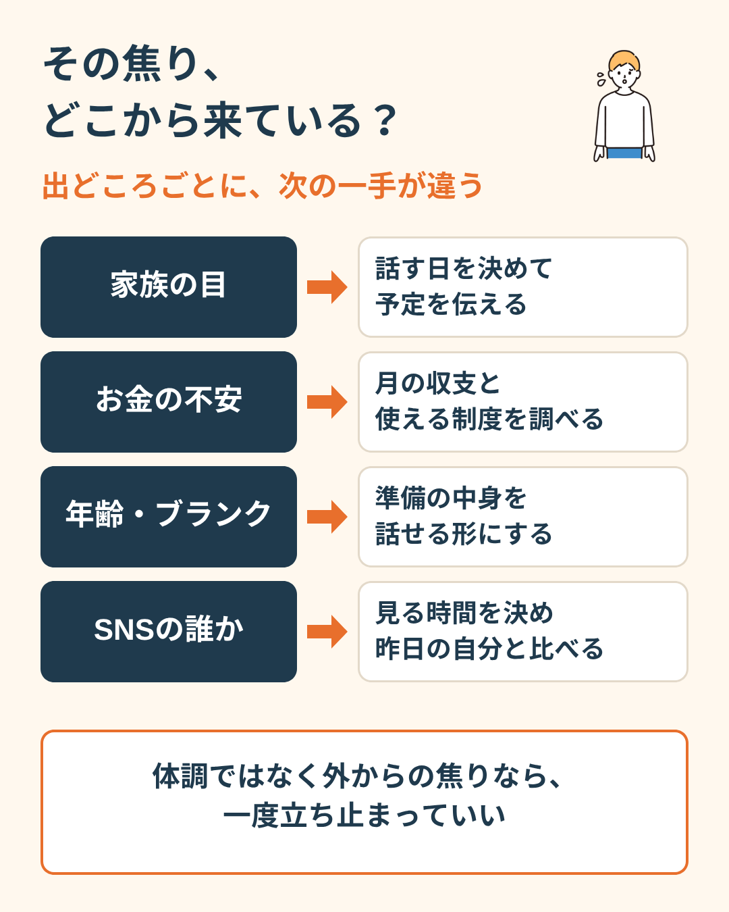
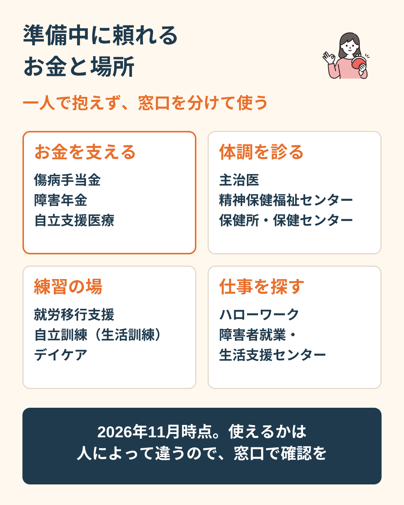

焦って就職すると、何が起きやすいのか
就労支援の現場でよく出会うのが、こんな流れです。休職や退職から数か月たち、貯金が減ってきた。家族から「そろそろどうするの」と聞かれるようになった。体調はまだ波があるけれど、「働き始めれば生活リズムも整うはず」と応募を始める。面接では頑張って元気にふるまい、内定が出る。「やっと働ける」とほっとしたのもつかの間、1か月目から朝起きるのがきつくなり、週末は寝て終わるようになります。2か月目には遅刻や当日の欠勤が増え、職場に事情を言い出せないまま気まずさがふくらむ。3か月目に体調を崩して退職し、「また続かなかった」と自分を責める。

この流れで見落とされやすいのは、内定が出たことと、働き続けられる状態にあることは別だという点です。面接は1時間ほど気を張れば乗り切れますが、仕事は週5日、毎日決まった時刻に家を出て、8時間近く人と関わり続けることです。体調の波が残っていると、その波は入社後に必ずと言っていいほど表に出てきます。数字で見ても、精神障害のある方の就職後1年の職場定着率はおよそ5割という調査があります（障害者職業総合センター、2017年の調査研究）。辞める理由はさまざまですが、体調面の準備が十分でないまま働き始めたことが背景にあるケースは少なくありません。
短期間での離職がつらいのは、収入が途切れることだけではありません。「やっぱり自分は働けない」という思いが強まり、次の一歩がもっと重くなります。履歴書に短い職歴が増えることを気にして、応募そのものが怖くなる方もいます。だからこそ、急ぐときほど、土台を先に整えるほうが結果的に早くたどり着きやすいのです。準備期間は止まっている時間ではなく、続けられる働き方をつくるための時間です。
「貯金が減るのが怖くて、主治医に『まだ早い』と言われたのに応募しました。内定をもらえたときは本当にうれしかったのに、3週間で朝に体が動かなくなって。辞めたあとは前より落ち込みました。二度目は半年かけて生活リズムと通勤練習から始めて、今は1年以上続いています。急がば回れって、本当だったと思います。」
働く前に整えたい土台。職業準備性ピラミッドで見る
「準備ができている」とは、具体的にどういう状態でしょうか。就労支援の機関でよく使われるのが、職業準備性ピラミッドという考え方です。働くために必要な力を、土台から順に5つの段に分けて表したものです。下から、①体調の管理（自分の体調の波を知る、通院や服薬を続けられる）、②毎日の生活の管理（決まった時刻に起きる、食事をとる、お金をやりくりする）、③人とのやりとり（あいさつをする、困ったときに助けを求められる）、④働く習慣（時間を守る、報告・連絡・相談ができる、身だしなみを整える）、⑤仕事の向き不向き（作業の速さや正確さ、得意な作業）と積み上がります。

このピラミッドで大切なのは、下の段がぐらついていると、上の段がいくら高くても長く続かないという見方です。たとえばパソコンのスキルが高く、面接での受け答えも上手な方でも、朝起きられない日が週に2日あれば、勤怠が乱れて仕事を続けるのは難しくなります。逆に、作業の速さや仕事の向き不向きは、職場に入ってから少しずつ身につけていける部分です。就職の準備というと、資格の勉強や面接の練習を思い浮かべがちですが、多くの場合、先に手をつけたいのは下の2段です。
自分がどの段でつまずきやすいかは、人によって違います。うつ病の回復期の方は①や②、発達障害のある方は③や④に課題を感じることが多い、と言われることがありますが、あくまで傾向です。「自分は朝は起きられるけれど、困ったときに言い出せない」「人と話すのは平気だけれど、疲れに気づかず倒れるまで動いてしまう」など、具体的な場面で考えると見えてきます。
ピラミッドを日々の行動に置きかえると、次の3つになります。①体調の安定（毎日同じ時刻に起きられる、外出や通勤の練習ができている、服薬が安定している）、②自己理解（自分の得意・不得意、合う環境・合わない環境、必要な配慮を言葉にできる）、③相談先の確保（就職後に困ったら話せる人がいる、通院が続いている、就職後の定着支援を使う計画がある）。この3つがそろってから応募を始めると、続けやすくなります。
なかでも見落とされがちなのが③の相談先です。働き始めると、平日の日中に通院や相談の時間を取るのが難しくなります。就職してから相談先を探すのではなく、就職前に「困ったらここに話す」という道筋をつくっておくことが、続けるための大きな支えになります。就職後に使える就労定着支援については、就職後に困ったら就労定着支援。対象・費用・期間と相談の使い方で詳しくまとめています。
「準備できた？」を2週間で確かめるセルフチェック
「自分はもう働けるのか、まだ早いのか」は、気分だけで判断すると揺れやすいものです。調子のいい日は「もういける」と思い、悪い日は「一生無理だ」と感じてしまいます。そこでおすすめしたいのが、2週間、実際の生活を記録して確かめる方法です。1日だけの調子ではなく、2週間の平均で見ると、自分の状態がぐっと見えやすくなります。

チェックする項目は、次の5つです。1つ目は、決めた時刻に、週5日起きられたか。働き始めると、平日は毎朝同じ時刻に起きる必要があります。目覚ましを止めて二度寝した日、布団から出られたのが昼だった日も、正直に記録します。2つ目は、週に3日以上、昼間に外出できたか。図書館、カフェ、散歩など、行き先は何でもかまいません。家の外で2〜3時間過ごせるかどうかが目安になります。3つ目は、通勤と同じ時間帯に、電車やバスに乗れたか。朝8時前後の混雑は、昼間の移動とはまったく違う疲れ方をします。実際に職場の最寄り駅まで行って帰ってくる「通勤練習」を、週に1〜2回試してみてください。
4つ目は、疲れた翌日も、寝込まずに過ごせたか。外出や用事が続いた翌日にどれくらい疲れが残るかは、働き始めたあとの体調を予想するうえでとても大切な手がかりです。予定を詰めた翌日に一日寝込むことが続くなら、まだ体力の土台づくりが必要なサインかもしれません。5つ目は、調子が崩れるサインを、人に話せるか。「眠りが浅くなる」「食欲が落ちる」「人の声がうるさく感じる」など、崩れる前に出る自分なりのサインを言葉にできると、職場で配慮をお願いするときにも役立ちます。
記録は、手帳やスマホのメモに「起きた時刻・外出した時間・疲れ（5段階）・ひとこと」を1行ずつ書くだけで十分です。たとえば「7:10起床／図書館2時間／疲れ3／午後に眠気」のように書きます。2週間分の記録を主治医や支援者に見せると、「まだ早い」「そろそろ次の段階に進んでみよう」という判断を一緒にしやすくなります。○がいくつ付いたら合格、という決まりはありません。○が少ない項目が、次の2週間に取り組むテーマです。
よくあるつまずきは、記録をつけ始めて3日目くらいで「全然できていない」と落ち込み、やめてしまうことです。記録は自分を採点するためのものではなく、今の状態を知るための地図です。できなかった日の記録こそ、「月曜日は崩れやすい」「雨の日は外に出にくい」といった、自分のパターンを教えてくれます。睡眠のリズムが整わない場合は、夜眠れない・仕事中に眠い。障害のある方の睡眠の整え方と主治医・職場への伝え方も参考にしてください。
どれくらいで整う？段階の進め方と期間の目安
「準備にはどれくらいかかるのか」は、よく聞かれる質問です。一般的には、生活リズムが2〜3か月安定していること、そして通勤と同じくらいの時間、外で活動できていることが、就職活動を始める一つの目安として挙げられることがあります。ただし、これは目安であって基準ではありません。体調や障害の特性、ブランクの長さによって、3か月で整う方もいれば、1年以上かけて少しずつ進む方もいます。主治医が「働くことを考えてもよい」と判断しているかどうかも、大切な確認ポイントです。
進め方のコツは、一気に週5日をめざさず、段階を区切ることです。たとえば、最初の1か月は「週3日、午前中に外出する」。安定したら次の1か月は「週4日、午前と午後で計4時間外にいる」。さらに「週5日、通勤時間帯に移動して6時間活動する」へと、少しずつ時間と日数を増やしていきます。段階を上げる判断は「上げた週の翌週に、疲れを持ち越していないか」で見ると、無理をしにくくなります。持ち越しているなら、1つ前の段階に戻ってかまいません。戻ることは後退ではなく、調整です。
一人で段階を組むのが難しい場合は、就労移行支援や自立訓練（生活訓練）のような、通いながら練習できる場を使う方法もあります。決まった時刻に通う場所があるだけで、生活リズムは整いやすくなります。また、いきなりフルタイムをめざすのではなく、週20時間程度の短時間勤務から始める働き方もあります。短時間勤務については週3日・短時間勤務の記事で詳しく紹介しています。
なお、うつ病などで休んでいて「いつから働けるのか」を考えている方は、うつで休んでいる。いつから働けるのかもあわせて読んでみてください。回復の段階ごとに、どんな目安で判断するかを整理しています。
焦りの出どころを見分けて、外からの焦りに振り回されない
「早く働かなければ」という焦りは、どこから来ているでしょうか。焦りそのものは悪いものではありません。前に進みたいという気持ちの表れでもあります。ただ、焦りの出どころが自分の体調の回復ではなく、外からの圧力であるとき、その焦りに従って動くと、体の準備が追いつかないまま走り出してしまいます。就労支援の現場で話を聞くと、焦りの出どころは大きく4つに分かれます。

1つ目は家族の目です。家族が「仕事はどうするの」と聞くのは、多くの場合、本人の予定が分からなくて不安だからです。「今は生活リズムを整えていて、来月は通勤練習を始める予定。仕事のことは月に1回まとめて話すね」と、話す日と予定を本人から伝えると、家族も待ちやすくなります。2つ目はお金の不安です。不安が漠然としているほど焦りは大きくなります。月にいくら出ていき、いくら入ってくるのかを書き出し、使える制度を調べると、「あと何か月は準備に使える」と見通しが立つことがあります（次の章で詳しく紹介します）。
3つ目は年齢やブランクです。「空白期間が長いと採用されない」と考えて焦る方は多いのですが、障害者雇用の面接では、ブランクの長さそのものより、その間にどう体調を整え、今どのくらい働ける状態なのかを聞かれることがよくあります。2週間の記録や、通勤練習の実績は、そのまま面接で話せる材料になります。4つ目はSNSの誰かです。同い年の友人の昇進や転職の報告を見て落ち込むのは自然なことですが、比べる相手は昨日の自分にしてみてください。夜寝る前にSNSを見る時間を決めるだけでも、焦りの波は小さくなります。
焦りの出どころが外からの圧力だと気づけたら、「今は動かない」と決めることも、立派な選択です。支援者と一緒に「今就職しなくていい理由」を確認しておくと、次に焦りが来たときに立ち止まりやすくなります。焦りとの付き合い方は、「このままでいいのか」という焦りとどう向き合うかでも取り上げています。
準備中のお金と、頼れる場所（2026年11月時点）
準備を急いでしまう一番の理由は、お金の不安かもしれません。「準備に半年かけたい。でも、その間の生活費はどうするのか」。ここでは、準備期間に確認しておきたいお金の制度と、相談できる場所を整理します。制度を使えるかどうかは、加入している保険や病状、収入などによって人それぞれ異なります。ここに書いた内容は2026年11月時点の一般的な情報なので、必ず窓口で確認してください。

お金を支える制度として、まず確認したいのが傷病手当金です。会社の健康保険に加入している方が、病気やけがで仕事を休み、給与が十分に出ないときに支給されるもので、支給開始から通算1年6か月を上限に、おおむね給与の3分の2程度が目安です。退職後も、一定の条件を満たせば受け取り続けられる場合があります。次に障害年金。初診日や保険料の納付状況、障害の程度などの条件がありますが、精神障害や発達障害も対象になります。そして自立支援医療（精神通院医療）は、通院や薬代の自己負担を原則1割に軽くし、所得に応じて月の上限額を設ける制度です。通院が長く続く方ほど、支出を抑える効果が大きくなります。
練習の場としては、就労移行支援があります。一般企業への就職をめざす方が、原則2年以内の期間で、生活リズムづくりから職業訓練、就職活動、就職後の定着までのサポートを受けられる福祉サービスです。利用料は前年の所得によって決まり、自己負担がかからない方も多くいます。生活リズムや体調の安定がまだ先の課題という方には、自立訓練（生活訓練）や、医療機関のデイケアという選択肢もあります。自立訓練については自立訓練（生活訓練）とはの記事にまとめています。
仕事探しの相談は、ハローワークの専門援助部門（障害のある方の相談窓口）や、就業と生活の両方の相談にのってくれる障害者就業・生活支援センターで受けられます。体調そのものの相談は主治医が中心ですが、地域の精神保健福祉センターや保健所・保健センターでも相談できます。一つの窓口で全部を解決しようとせず、お金・体調・練習・仕事探しで相談先を分けて使うと、一人で抱え込まずにすみます。
家族の方にお願いしたいのは、本人の準備を「何もしていない時間」と見ないことです。2週間の記録をつける、通勤の時間帯に電車に乗ってみる、週に1回支援機関に通う。外からは小さく見える一歩も、本人にとっては大きな挑戦です。「いつになったら働けるの」ではなく、「今週はどんな練習をしたの」と聞いてもらえると、本人は準備のことを話しやすくなります。就職活動の具体的な進め方は、障害のある方の就職活動の進め方で紹介しています。
よくある質問
関連記事
「まだ早いかな」の段階から、話してみませんか
働く準備がどこまでできているか、一人で判断するのは難しいものです。mimemimeの無料相談では、今の生活リズムや体調を一緒に整理するところから始められます。ご家族からのご相談も受け付けています。
無料で話してみるこの記事に、聞いてみたいことはありますか？
「自分の場合はどうなんだろう」と思ったことを、気軽に書いてみてください。いただいた質問は個別にお返事したうえで、匿名で記事にすることがあります。
mimemime代表。就労支援の現場経験をもとに、障がいのある方の働く不安に寄り添う記事を執筆。